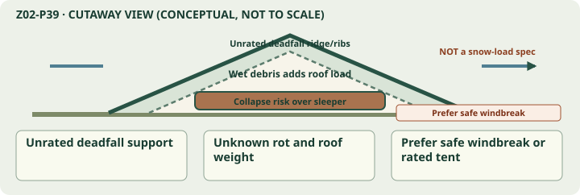

Z02-P39 · Shelter and housing · Adapted historical material
Understand structural hazards of improvised debris roofs and A-frames
Recognize why fallen-branch A-frames and debris huts lack verified load ratings and when to reject overhead builds.
When it applies · Conceptual assessment of improvised emergency shelters; this card is NOT a snow-load build specification.
Equipment · Safe terrain assessment; if equipped, prefer a purpose-made shelter or existing safe refuge over improvised wood framing.

Actions
- Inspect site safety first—reject dead standing trees, runoff channels and snow-loaded canopies before considering any natural materials.[E03, E04, E13]
- Recognize that deadfall ridgepoles and side ribs have unpredictable internal rot, knots and joint slippage; fallen-branch framing carries ZERO validated snow-load or wind-load rating.[E13, E05, ED]
- Recognize that wet leaves, damp moss or melting snow piled onto an improvised frame soak bedding rapidly and add sudden roof weight that can collapse onto an occupied sleeping area.[E05, E10, ED]
Failure recognition · Sleeping beneath a heavy debris roof built from brittle deadwood during wet snowfall or rising wind.[E13, E05, E16]
Verify · Confirm you can explain why a low windbreak plus dry ground insulation beats an untested overhead roof when wood soundness or weather loading is uncertain.[E05, E13, ED]
Stop or change course · Keep people out from under improvised roofs of unknown capacity. Sagging, movement or added wet debris are further reasons to leave the area immediately.[E13, E16, ED]
Evidence and editorial notes
- E03 · NPS · Finding and Setting Up a Campsite (current web edition)
- Section: Finding a campsite · Conditions: Legal established or designated campsite
Support: Choose a durable legal site suited to the conditions. Campsite rules and physical risks vary by park.
Limitations: Established sites can still develop new hazard trees or flood risk after storms. · Conflicting evidence: None; requires live site inspection even at designated pads.
Editorial note: First gate of shelter site selection. · Specialist reviewer: Land management and wilderness shelter
Primary source · checked 2026-11-24 - E04 · NWS · Flood Safety: Key Points for Camping and Hiking (agency PDF)
- Section: Before and during camping; know your surroundings · Conditions: Stream valleys and runoff channels subject to flash flooding
Support: Choose higher ground away from water channels. Rain far upstream can drive rapid flooding.
Limitations: Dry streambeds and gentle swales can flood rapidly without local rainfall. · Conflicting evidence: None; aligns with NWS-FLOOD.
Editorial note: Core hydrological exclusion rule for shelter placement. · Specialist reviewer: Emergency management and hydrology
Primary source · checked 2026-11-24 - E05 · NWS · What To Do If You're Caught in a Winter Storm (current web edition)
- Section: Outside and find shelter · Conditions: Cold, wet or windy winter conditions
Support: Block wind, stay dry and keep off cold ground. Keep exposure reduction separate from making a fire.
Limitations: Improvised windbreaks do not provide rated thermal protection or snow-load capacity. · Conflicting evidence: None; aligns with CDC-H.
Editorial note: Separates wind, ground, and moisture heat-loss pathways. · Specialist reviewer: Cold-weather shelter specialist
Primary source · checked 2026-11-24 - E10 · NWS · What To Do If You're Caught in a Winter Storm (current web edition)
- Section: Outside > Protect yourself from frostbite and hypothermia · Conditions: Outdoor winter storm
Support: Keep clothing dry and avoid overexertion. Wetness accelerates cooling.
Limitations: Cotton retains moisture and accelerates conductive and evaporative heat loss. · Conflicting evidence: None; reinforces moisture-management layering.
Editorial note: Links sweat management to overnight insulation integrity. · Specialist reviewer: Cold-weather shelter and wilderness medicine
Primary source · checked 2026-11-24 - E13 · USDA Forest Service · Hazard Tree Safety (agency PDF)
- Section: What You Can Do to Reduce Risk · Conditions: Forest campsites and stops
Support: Look for dead trees and falling material. Stay away from hazardous trees and move away when winds make the site unsafe.
Limitations: Internal decay and root rot can cause live-looking trees to fail in saturated soils or high wind. · Conflicting evidence: Does not specify a universal exclusion radius; tree height and slope govern fall reach.
Editorial note: Prevents false precision on fall-zone distance while requiring overhead screening. · Specialist reviewer: Land management and arboriculture safety
Primary source · checked 2026-11-24 - E16 · NWS · Wind Safety (current web edition)
- Section: Wind Safety > High Wind Hazards · Conditions: Forecast or developing high winds, squalls, or straight-line winds
Support: High winds topple trees, loft debris, and stress lightweight shelters beyond fabric and anchor limits; relocate out of timbered fall zones and into substantial shelter before gusts peak.
Limitations: Tents and tarps lack standardized wind-speed survival guarantees across soil types and pitch angles. · Conflicting evidence: None; avoids unvalidated mph ratings for improvised pitches.
Editorial note: Drives high-wind shelter inspection, guying limits, and abandonment thresholds. · Specialist reviewer: Weather safety and shelter equipment
Primary source · checked 2026-11-24
Source lineage · B012 P13 natural winter A-frame; adapted historical material · Classification · Adapted historical material.